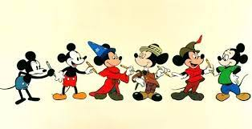
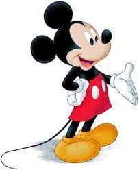
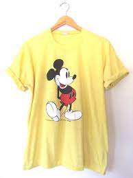
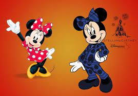
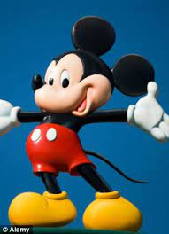
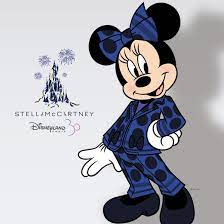
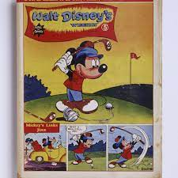

- 
Why does Mickey Mouse always wear hand gloves?
Why does Mickey Mouse wear pants and no shirt ...

How Fashion Stars Wear Mickey Mouse Tops
Mickey Mouse and Friends to Wear Sparkling New Ensembles ...
- 
Mickey Mouse | Wikipedia
- 
How to Wear The Mickey Mouse Fashion Trend | StyleCaster
- 
Move over, Mickey — Minnie Mouse is wearing the pants...
Why do Disney Characters Wear White Gloves? / Bright Side
Why did Mickey Mouse wear green pants in his color debut?
Why does everyone wear gloves in Mickey Mouse?
Dibujos Animados De Mickey Mouse, Minnie Mouse, ...
- 
Is Mickey Mouse making your child STUPID? Animal characters ...
Mickey Mouse | Disney Wiki | Fandom
- 
Disney's Minnie Mouse in a pantsuit by Stella McCartney?
Mickey Mouse with His Outfit From "Roll 'Em" | Mickey mouse,...
- 
Why does Mickey Mouse wear gloves? - Vox